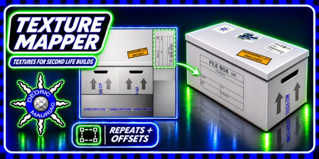

Texture Mapper
Second Life texture repeats and offsets

Draw a box on a texture and get the Second Life repeats and offsets for it. A 2010 Windows tool, now free, recovered and rebuilt for the browser.
Live demo Source Blog: Texture Mapper Released (2010)
Executive summary
Why it exists
In Second Life, one uploaded image can cover many faces if each face shows only part of it. That saves upload fees and loads faster, but working out the repeats and offsets by hand was tedious unless the image was laid out in a strict grid.
Outcome
Public under the MIT license, with the original 2010 build attached to the v1.0 release and the web version live on GitHub Pages.
My role
Author. I wrote the Windows program in 2008 and released it in 2010; in 2026 I made it free and open source under the MIT license.
Technical overview
How it works
A Windows Forms program (C#, .NET 2.0) where you drag a box on a texture and it shows the repeats per face and offsets, with Default and Planar mapping, flipping and a preview. Only the published build survived, so the source was decompiled with ILSpy and rebuilt as a Visual Studio 2008 project. The web version does the same math in the browser, keeps images local, adds an LSL line to copy, and its About box makes serial numbers so anyone can still register the old program.
Hard parts
Proving the recovered source was faithful: it was compiled again and decompiled, and every class matches the original except two spots where today's compiler writes the same logic differently. The web serial generator was checked against the original program's own check code run under .NET.
How it was made
The source recovery, its round-trip check and the web version were done with Claude (Opus 5.5) from my directions.